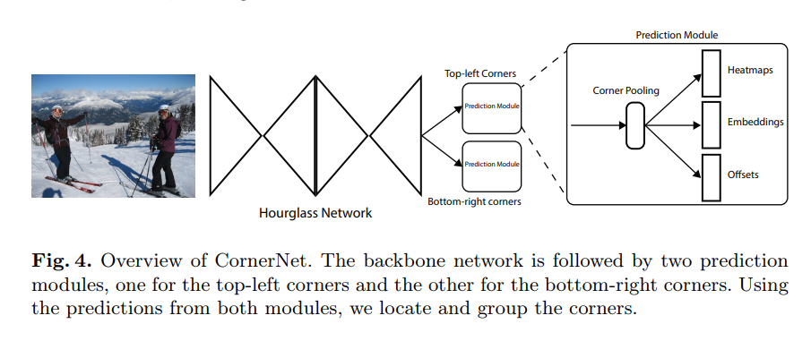
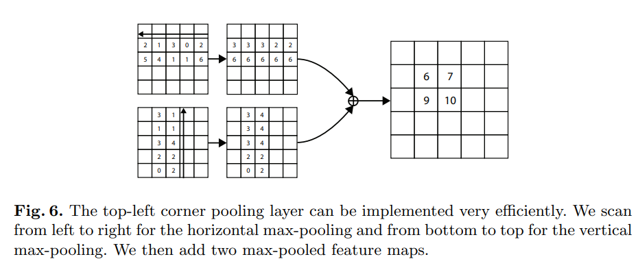
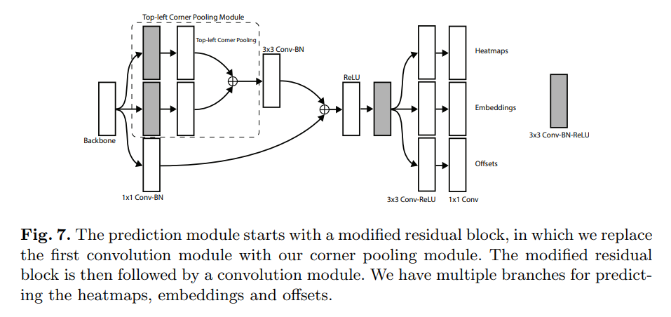

CornerNet: Detecting Objects as Paired Keypoints
这篇文章是这篇文章的前置,实际上也确实有更多的内容,在具体实现上有区别。
这篇文章给出的思路是，让神经网络分别给出某一类别左上角与右下角的heatmap，然后通过embedding vector的相似性进行两个角落的匹配。另外为了提高性能，还给出了corner pooling以及它的GPU实现。整个网络流程基本是one-stage
结构overview

backbone网络使用的是hourglass
之后跟随的是两个预测模块，一个预测输出是左上角，另一个给出的是右下角。这两个模块有各自的corner pooling。
预测角点
网络最终输出的是两组heatmap，一个给左上角一个给右下角，每一组热图有个特征，与类别数一致(每一类一个channel的热图)，feature map形状是.不像yolo或者SSD一样带有background channel。
在训练的时候，直觉与经验表示不应该简单地惩罚不正确的角点位置。这里根据物体的体积的设定不同的radius cost.最终设计出一个focal loss,原版focal loss源自与这篇文章,在这里有简介。这里的定义是
其中为位置上的score，,其中是radius是, 是图片中物体的数目。是可调节的超参数。
由于卷积网络里面我们需要对图片下采样，,需要额外学习一个offsets去补偿 这个cost可以用
将角点聚团
因为一张图如果有多个物体，一个图会有不止一对的左上角点和右下点。本文的做法提到了这篇论文,简介
网络给每一个左上角与右下角角预测一个embedding vector，本文这里模仿前一篇论文的做法，维度仅为1。如果代表的是同一个bounding box，那么两者距离就会比较小。分为两个loss，一个是pull一个push。
作为第个物体，左上角的embedding,作为右下角的。是的均值，然后设定，与offset一样，这个loss只执行在gt的角落位置上.
Corner Pooling
用来允许每一个，计算方式如图

然后对相加得到结果。为右下角的pooling layer取max的方向相反。

先将基础的resblock的第一个卷积改为corner pooling.